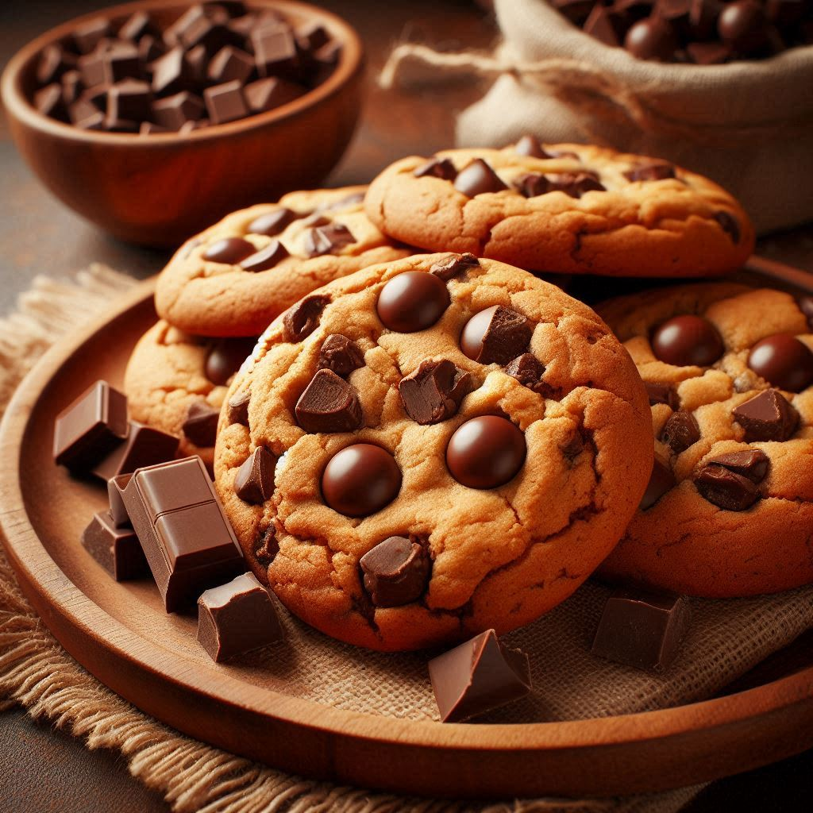

Home
Chocolate Chip Cookies

Delicious chocolate chip cookies
Delicious chewy chocolate chip cookies. The chocolate melts in your mouth
Ingredients
- 2 and 1/4 cups (280g) all-purpose flour
- 1 teaspoon baking soda
- 1 and 1/2 teaspoons cornstarch*
- 1/2 teaspoon salt
- 3/4 cup (170g / 12 Tbsp) unsalted butter, melted & cooled 5 minutes
- 3/4 cup (150g) packed light or dark brown sugar
- 1/2 cup (100g) granulated sugar
- 1 large egg + 1 egg yolk, at room temperature
- 2 teaspoons pure vanilla extract
- 1 and 1/4 cups (225g) semi-sweet chocolate chips or chocolate chunks
Steps
-
Whisk the flour, baking soda, cornstarch, and salt together in a large bowl.
Set aside.
-
In a medium bowl, whisk the melted butter, brown sugar, and granulated
sugar together until no brown sugar lumps remain. Whisk in the egg and
egg yolk. Finally, whisk in the vanilla extract. The mixture will be
thin. Pour into dry ingredients and mix together with a large spoon
or rubber spatula. The dough will be very soft, thick, and appear
greasy. Fold in the chocolate chips. The chocolate chips may not
stick to the dough because of the melted butter, but do your best to combine
them.
-
Cover the dough tightly and chill in the refrigerator for at least
2–3 hours or up to 3 days. I highly recommend chilling the cookie
dough overnight for less spreading.
-
Take the dough out of the refrigerator and allow it to slightly
soften at room temperature for 10 minutes.
-
Preheat oven to 325°F (163°C). Line large baking sheets with parchment
paper or silicone baking mats. Set aside.
-
Using a cookie scoop or Tablespoon measuring spoon, measure 3 scant
Tablespoons (about 2 ounces, or 60g) of dough for XL cookies or 2
heaping Tablespoons (about 1.75 ounces, or 50g) of dough for
medium/large cookies. Roll into a ball, making sure the shape is
taller rather than wide—almost like a cylinder. This helps the cookies
bake up thicker. Repeat with remaining dough. Place 8–9 balls of dough
onto each cookie sheet.
-
Bake the cookies for 12–13 minutes or until the edges are very lightly
browned. (XL cookies can take closer to 14 minutes.) The centers will
look very soft, but the cookies will continue to set as they cool. Cool
on the baking sheet for 10 minutes. Meanwhile, press a few extra
chocolate chips into the tops of the warm cookies. This is optional and
only for looks. After 10 minutes of cooling on the baking sheets,
transfer cookies to a wire rack to cool completely.
-
Cookies stay fresh covered at room temperature for up to 1 week.